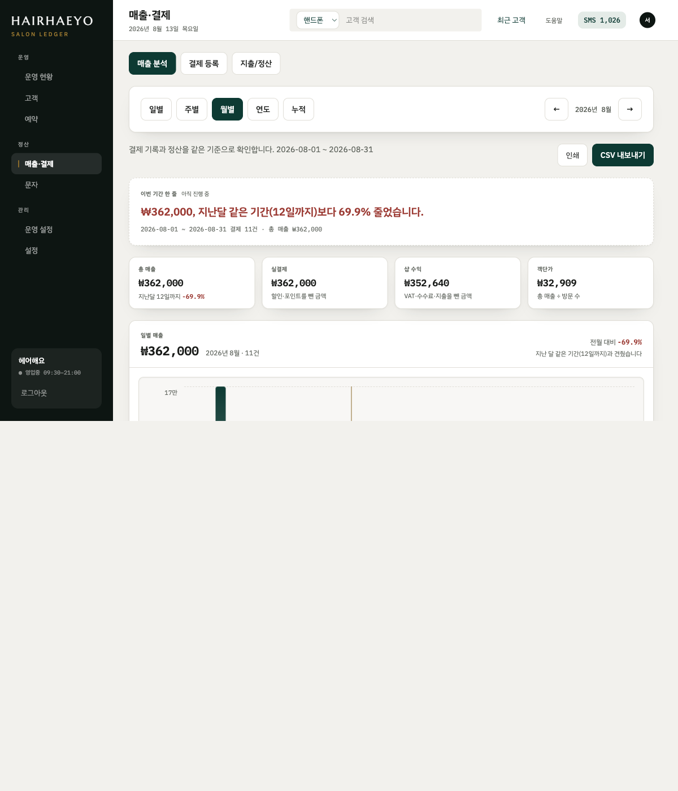
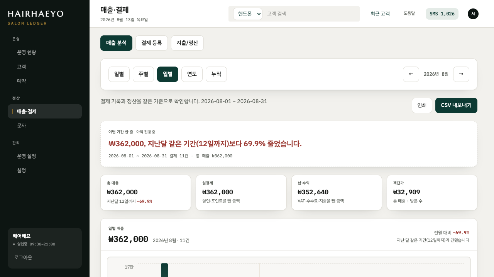

매출 분석: 원본 결손 차단 및 더미 분석 환경 감사
대상: /sales · 추적성: FUNCTION.md §3.2 매출 조회, §3.5 매출·지출 조정/정산
결론
구현 결과 PASS
원본 이관 데이터에서 서비스·결제수단·시간대 값이 결손이면 해당 분석만 차단합니다. 총매출, 실결제, 샵 수익, 객단가, 추이, 요일, 고객, 정산은 같은 서버 원장 집계를 유지합니다.
감사 환경 분리됨
더미 스크립트는 이제 원본과 대상 DB 경로를 모두 요구하고, 동일 경로를 거부합니다. 더미 DB는 .data/demo/에만 생성되며 Git에서 무시됩니다.
실행 증거


원본 결손 복제본과 더미 복제본에서 2026-08 월 매출은 모두 총매출 ₩362,000, 실결제 ₩362,000, 샵 수익 ₩352,640으로 일치했습니다.
sales-audit.md 체크리스트 결과
| 영역 | 상태 | 현재 검증 결과 / 제한 |
|---|---|---|
| 데이터 원본·금액 정합성 | PASS | SQLite ledger 서버 집계와 화면 KPI·정산을 대조했다. 결손 차단은 금액을 재계산하거나 변경하지 않는다. |
| 초기 진입·기간·비교 | PASS | 월 기본 진입, 일/주/월/연도/누적 선택, 동일 경과일 비교 문구를 확인했다. |
| KPI·일별 차트·정산 | PASS | 총매출·실결제·샵 수익·객단가, 일별 드릴다운 링크, 정산식을 확인했다. |
| 시술·결제수단·시간대 | PASS | 원본 결손에서는 비대화형 안내 카드, 더미 복제본에서는 분석 카드와 키보드 접근 가능한 드릴다운을 확인했다. |
| 고객·요일 분석 | PARTIAL | 결제 기반 방문/고객/신규 기록 및 요일 분포를 확인했다. 예약 완료·취소·노쇼 원천이 없어 실제 방문 lifecycle은 검증 불가다. |
| 상세·CSV·인쇄 | PARTIAL | 거래 링크, CSV 경로, 인쇄 제어의 DOM을 확인했다. 더미 화면의 시술 상세 모달은 Playwright 현재 실행에서 열림 상태를 재현하지 못했고, 기존 렌더링·초점 복귀 단위 테스트만 통과했다. 다운로드 파일과 인쇄 렌더의 별도 수동 검사는 남아 있다. |
| empty·error·loading | GAP | 미래 빈 기간은 확인했다. 그러나 /sales 전용 loading.tsx와 error.tsx가 없어, 느린 DB·집계 실패를 사용자에게 0원/빈 화면과 구분해 보여 주는 경로는 구현·검증되지 않았다. |
| 키보드·접근성 | PARTIAL | 의미론, 표 대체값, 가시 focus 클래스, 모달 닫기/초점 복귀 코드를 확인했다. 스크린리더와 200% 확대 전체 순회는 남아 있다. |
| 네트워크·날짜 filter | PASS | 분석 API는 없다. /sales Server Component가 URL의 기간 query를 파싱해 SQLite 범위를 직접 조회하며, CSV·거래 상세도 같은 query serializer/range 규칙을 사용한다. |
| 데스크톱 1440 / 1280 | PASS | 데스크톱 기준 화면과 최소 폭에서 수평 오버플로우가 없음을 확인했다. 모바일은 제품 범위 밖이다. |
이번에 수정된 사항
- 서버 분석 모델에 서비스·결제수단 가용성 상태를 추가했다.
- 고정된 한 시간대뿐인 이관 데이터는 시간대 분석을 비가용으로 판단한다.
- 비가용 카드에는 “원본 정보 없음”, 이관 복원 안내, 금액 기준 지표 지속 가능성을 텍스트로 표시한다.
- 더미 스크립트는 복사 후 적용하며 원본과 대상이 같으면 실패한다.
사용자 승인 전에는 적용하지 않은 수정 후보
A-01 · P1 — 추적 DB에 더미 보정값이 포함됨
HEAD:.data/hairhaeyo.sqlite에도 서비스 분류·결제수단·분산 시간이 이미 존재한다. 즉 “더미 DB는 push하지 않는다”는 스크립트 주석과 저장소 실제 상태가 다르다. 운영 원본 DB를 Git에서 분리하거나, 명시적인 데모 DB로 교체할지 결정이 필요하다.
A-02 · P1 — 영업일 기준 날짜 설명
헤더의 달력 날짜와 09:00 기준 영업일이 다를 수 있다. 기간 요약 근처에 “영업일 기준 n일 (09:00 마감)”을 명시하는 개선을 권장한다.
A-03 · P2 — 미래 빈 기간의 -100%
아직 시작하지 않은 기간은 비교·차트를 줄이고 “아직 시작되지 않은 기간”으로 분리하면 사업 악화로 오인하지 않는다.
A-04 · P2 — 로그인 후 deep link 복귀
next 파라미터가 로그인 후 보존되지 않아 저장된 분석 URL이 기본 화면으로 돌아간다. 상대 경로 검증 후 복귀하도록 수정이 필요하다.
A-05 · P2 — 매출 분석 loading/error 경계 없음
/sales에 route-level loading.tsx/error.tsx가 없다. 느린 조회나 SQLite 오류에서 “데이터 없음”과 “조회 실패”를 분명히 구분하는 상태를 추가할지 결정이 필요하다.
미검증 항목과 최종 판단
NOT VERIFIED: 실제 운영 원본의 서비스·결제수단·시각 분포, 다운로드한 CSV 파일 내용, 인쇄본, 강제 DB 오류 복구, 200% 확대와 스크린리더 전체 순회, 예약 완료/취소/노쇼 lifecycle. 모바일 감사는 제품 범위 밖이다.
Verdict: PASS WITH MAJOR IMPROVEMENTS. 분석 지식이 없는 원장도 금액·비교·정산은 파악할 수 있으며, 원본 결손 차단으로 가짜 서비스/결제/시간대 결론을 피할 수 있다. 다만 추적 DB의 더미 값 경계, 영업일 설명, 미래 빈 기간, 오류 상태는 출시 전 결정·보완이 필요하다.
이 화면에서 운영상 의미 있는 정보는 금액, 기간 비교, 정산, 결제 기반 고객·요일 패턴이다. 실제 원천을 복원하기 전 서비스·결제수단·시간대는 운영 의사결정에 사용하면 안 되며, 현재는 이를 화면에서 차단한다.
검증 명령
node scripts/verify-analytics-dummy.mjs · 매출 관련 Vitest 29건 · npm run typecheck 통과. 전체 테스트는 Windows Credential Manager의 macOS 경로 차이로 기존 2건 실패하며, 이번 변경과 무관하다.